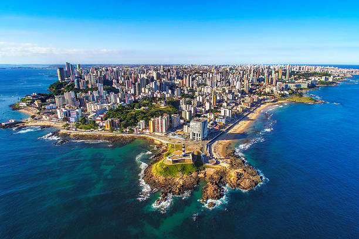

A Bahia é um estado localizado na região Nordeste do Brasil, conhecido por sua rica cultura, belezas naturais e patrimônio histórico. Sua capital, Salvador, é famosa por seu centro histórico colonial, o Pelourinho, e pelo Carnaval, considerado o maior de rua do mundo. O estado destaca-se também pela culinária típica, com pratos como acarajé, vatapá e moqueca baiana. Além disso, a Bahia é berço de diversos ritmos musicais, como o axé, samba-reggae e bossa nova, e possui manifestações culturais reconhecidas pela UNESCO, como a roda de capoeira e a roda de samba do Recôncavo Baiano.
 Voltar